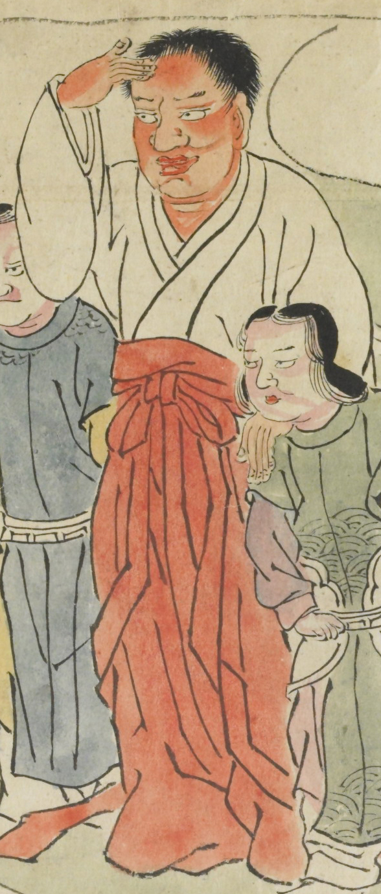

酒天童子。赤い顔をした大きな童子。額に手を当てて、遠くを眺めているようすである。白色の服に、赤色の袴をはいている。隣には2人の使いの者が控えている。
出典：親書誌：U426_nichibunken_0079：酒天童子絵巻；シュテンドウジエマキ／日付：2006／資源識別子：U426_nichibunken_0079_0003_0001
Copyright (c)2010- International Research Center for Japanese Studies, Kyoto, Japan. All rights reserved.